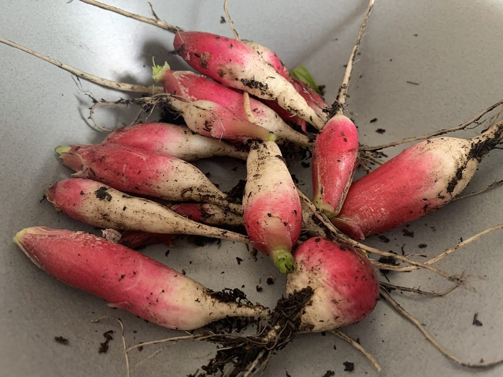

B 伸張ゴム
メニュー
背面側のゴムの層は、曲がるとき外側で伸びる側。メニューの欄をこの層に見立てて、いちばん手前に置きました。
お品書き
メニューと価格は準備中です
| メニュー | 準備中 |
|---|---|
| 価格 | 準備中 |
| ご予約 | 準備中 |
確認できしだい、ここに載せます。最新の情報はInstagramをご覧ください。
写真(イメージ)
素材のイメージ
下の写真はメニューの内容ではなく、制作側が選んだフリー素材です。国外・撮影地不明のもので、お店の写真ではありません。




B 伸張ゴム
背面側のゴムの層は、曲がるとき外側で伸びる側。メニューの欄をこの層に見立てて、いちばん手前に置きました。
お品書き
| メニュー | 準備中 |
|---|---|
| 価格 | 準備中 |
| ご予約 | 準備中 |
確認できしだい、ここに載せます。最新の情報はInstagramをご覧ください。
写真(イメージ)
下の写真はメニューの内容ではなく、制作側が選んだフリー素材です。国外・撮影地不明のもので、お店の写真ではありません。
